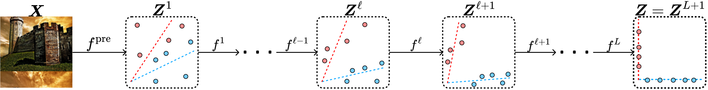
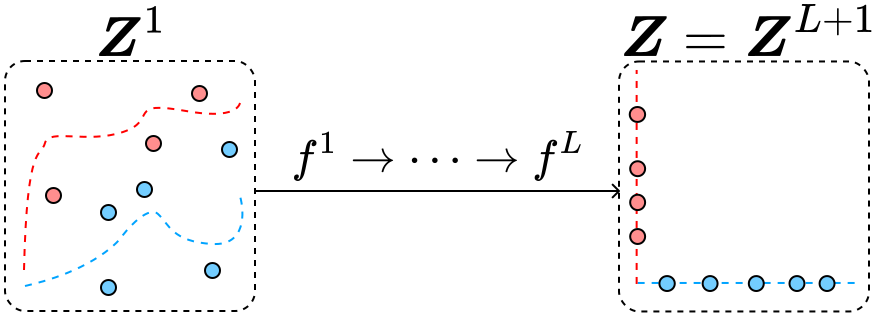
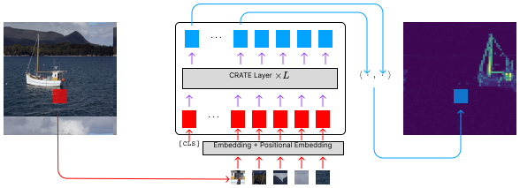
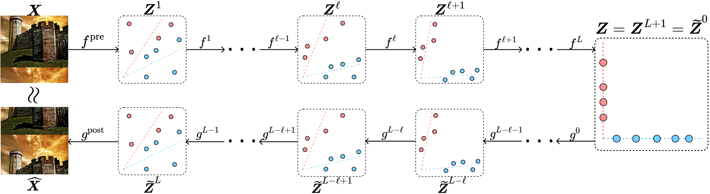
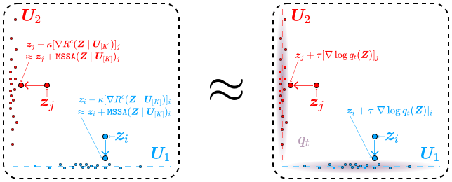
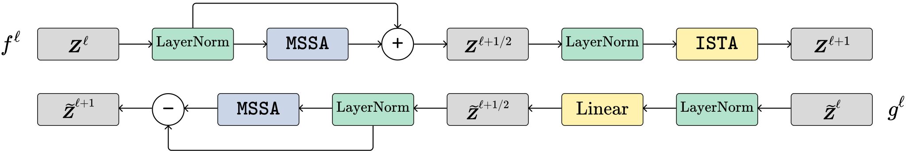

White-Box Transformers via Sparse Rate Reduction: Compression is All There Is?
@ NeurIPS 2023, CPAL 2024, ICLR 2024
1UC Berkeley
2TTIC
3ShanghaiTech
4UIUC
5JHU
6HKU
@misc{yu2023whitebox,
title={
White-Box Transformers via Sparse Rate Reduction:
Compression Is All There Is?
},
author={
Yaodong Yu and Sam Buchanan and Druv Pai
and Tianzhe Chu and Ziyang Wu and Shengbang Tong and Hao Bai
and Yuexiang Zhai and Benjamin D. Haeffele and Yi Ma
},
year={2023},
eprint={2311.13110},
archivePrefix={arXiv},
primaryClass={cs.LG}
}

Summary
CRATE is a transformer-like architecture which is constructed through first principles, enjoys a rich theoretical framework, and achieves competitive performance across diverse training setups.
At the top of the page, we have linked a long-form manuscript explaining the CRATE architecture in full detail. Below, we summarize the numerous sub-projects that have developed the CRATE architecture. These consist of:
- Our NeurIPS 2023 paper, which developed the original CRATE framework and applied it to vision classification.
- Our CPAL 2024 paper, which used the learned representations in classification-trained CRATE models for semantic segmentation tasks.
- Our ICLR 2024 paper, which extended the CRATE framework to self-supervised learning tasks, including (masked) autoencoding.
Code, paper links, bibliographic information, and short write-ups are listed below for each project. At the bottom of the page, we also shout-out some follow-up work.
White-Box Transformers via Sparse Rate Reduction
@ NeurIPS 2023
@article{yu2024white,
title={White-Box Transformers via Sparse Rate Reduction},
author={
Yu, Yaodong and Buchanan, Sam and Pai, Druv
and Chu, Tianzhe and Wu, Ziyang and Tong, Shengbang
and Haeffele, Benjamin and Ma, Yi
},
journal={Advances in Neural Information Processing Systems},
volume={36},
year={2024}
}

What is CRATE?
CRATE (Coding RATE transformer) is a white-box (mathematically interpretable) transformer architecture, where each layer performs a single step of an alternating minimization algorithm to optimize the sparse rate reduction objective
\[\max_{f}\mathbb{E}_{\boldsymbol{Z} = f(\boldsymbol{X})}[\Delta R(\boldsymbol{Z} \mid \boldsymbol{U}_{[K]}) - \lambda \|\boldsymbol{Z}\|_{0}] = \max_{f}\mathbb{E}_{\boldsymbol{Z} = f(\boldsymbol{X})}[R(\boldsymbol{Z}) - R^{c}(\boldsymbol{Z} \mid \boldsymbol{U}_{[K]}) - \lambda \|\boldsymbol{Z}\|_{0}],\]
\[
\begin{aligned}
&\max_{f}\mathbb{E}_{\boldsymbol{Z} = f(\boldsymbol{X})}[\Delta R(\boldsymbol{Z} \mid \boldsymbol{U}_{[K]}) - \lambda
\|\boldsymbol{Z}\|_{0}]
\\ =& \max_{f}\mathbb{E}_{\boldsymbol{Z} = f(\boldsymbol{X})}[R(\boldsymbol{Z}) - R^{c}(\boldsymbol{Z} \mid
\boldsymbol{U}_{[K]}) - \lambda \|\boldsymbol{Z}\|_{0}],
\end{aligned}
\]
where \(R\) and \(R^{c}\) are measures of compression of the final token representations \(\boldsymbol{Z} = f(\boldsymbol{X})\) w.r.t. different codebooks, and the \(\ell^{0}\) norm promotes the sparsity of \(\boldsymbol{Z}\). Overall, the sparse rate reduction objective promotes compact and sparse representations.
The function \(f\) is defined as
\[f = f^{L} \circ f^{L - 1} \circ \cdots \circ f^{1} \circ f^{\mathrm{pre}},\]
where \(f^{\mathrm{pre}}\) is the pre-processing mapping, and \(f^{\ell}\) is the \(\ell^{\mathrm{th}}\)-layer forward mapping that transforms the token distribution to optimize the above sparse rate reduction objective incrementally.

In particular, \(f^{\ell}\) implements a step of a parameterized optimization algorithm on the sparse rate reduction, thus making the representations more compact and sparse.
Architecture
The following figure presents an overview of the general CRATE architecture:
After encoding input data \(\boldsymbol{X}\) as a sequence of tokens \(\boldsymbol{Z}^1\), CRATE constructs a deep network that transforms the data to a canonical configuration of low-dimensional subspaces by successive compression against a local model for the distribution, generating \(\boldsymbol{Z}^{\ell+1/2}\), and sparsification against a global dictionary, generating \(\boldsymbol{Z}^{\ell+1}\). Repeatedly stacking these blocks and training the model parameters via backpropagation yields a powerful and interpretable representation of the data.

The full architecture is simply a concatenation of such layers, with some initial tokenizer and final task-specific architecture (i.e., a classification head). Overall, CRATE is similar to a transformer, with two differences:
- in each attention head, the \(\boldsymbol{Q}\), \(\boldsymbol{K}\), and \(\boldsymbol{V}\) weight matrices are weight-tied, i.e., set to be equal;
- and the nonlinearity following each attention layer is no longer a multi-layer perceptron (MLP), but rather a more structured operator (\(\texttt{ISTA}\)) with sparse outputs.
Classification
Below, the classification pipeline for CRATE is depicted. It is virtually identical to the popular vision transformer.

We use soft-max cross entropy loss to train on the supervised image classification task. We obtain competitive performance with the usual vision transformer (ViT) trained on classification, with similar scaling behavior, including above 80% top-1 accuracy on ImageNet-1K with 25% of the parameters of ViT.
Emergence of Segmentation with Minimalistic White-Box Transformers
@ CPAL 2024
@inproceedings{yu2024emergence,
title={
Emergence of Segmentation with Minimalistic White-Box Transformers
},
author={
Yu, Yaodong and Chu, Tianzhe and Tong, Shengbang and Wu, Ziyang
and Pai, Druv and Buchanan, Sam and Ma, Yi
},
booktitle={Conference on Parsimony and Learning},
pages={72--93},
year={2024},
organization={PMLR}
}
Segmentation and Object Detection
An interesting phenomenon of CRATE is that even when trained on supervised classification, it learns to segment the input images, with such segmentations being easily recoverable via attention maps, as in the following pipeline (similar to DINO).

Such segmentations were only previously seen in transformer-like architectures using a complex self-supervised training mechanism as in DINO, yet in CRATE, segmentation emerges as a byproduct of supervised classification training. In particular, the model does not obtain any a priori segmentation information at any time. Below, we show some example segmentations.

Another remarkable property is that attention heads in CRATE automatically carry semantic meaning, which implies that CRATE may have post-hoc interpretability for any classification it makes. Below, we visualize the output of some attention heads across several images and several animals, showing that some attention heads correspond to different parts of the animal, and this correspondence is consistent across different animals and different classes of animals.

Masked Autoencoding via Structured Diffusion with White-Box Transformers
@ ICLR 2024
@inproceedings{pai2024masked,
title={Masked Completion via Structured Diffusion with White-Box Transformers},
author={Pai, Druv and Buchanan, Sam and Wu, Ziyang and Yu, Yaodong and Ma, Yi},
booktitle={The Twelfth International Conference on Learning Representations},
year={2024}
}
Autoencoding
We extend CRATE to autoencoding by using the following pipeline.

To derive the decoder architecture, we propose a novel framework of structured denoising-diffusion, which is analogous to the common (ordinary) denoising-diffusion framework popularly used for generative modelling of imagery data. Our framework relies on a quantitative connection between the compression operator and the score function (as used in denoising-diffusion models), as shown below:

The encoder and decoder are derived through discretizations of the structured denoising and diffusion processes, respectively. Importantly, the encoder derived from structured denoising is exactly the previously described CRATE architecture. The full encoder and decoder layers are given below.

This CRATE autoencoding architecture achieves competitive performance on the masked autoencoding task, as shown by the below examples.

In addition, it obtains the same emergent properties as the classification-trained CRATE, such as interpretable attention maps in the encoder.

Acknowledgements
This work is partially supported by the ONR grant N00014-22-1-2102, and the joint Simons Foundation-NSF DMS grant 2031899.
This website template was adapted from Brent Yi's project page for TILTED.
Follow-up Projects
Some recent works have built off of the CRATE methodology or philosophy. Here is a non-exhaustive list of such works (with permission).
- "Token Statistics Transformer: Linear Time Attention via Variational Rate Reduction," which proposes a new compression objective within the CRATE framework such that the resulting Token Statistics Transformer (ToST) model has a linear-time attention mechanism which is performant as well as principled and interpretable.
- "Scaling White-Box Transformers for Vision" [project website, paper, code], which proposes a new sparsification mechanism within the CRATE framework such that the resulting CRATE-$\alpha$ model can scale to very large datasets and architectures while remaining mathematically and conventionally interpretable.